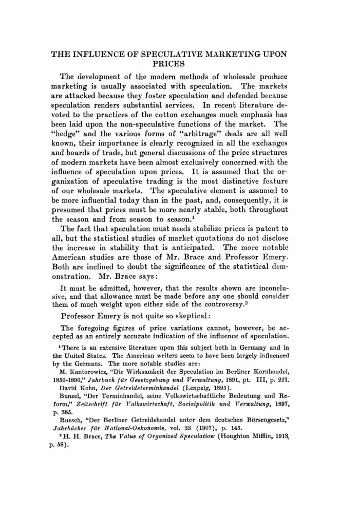

Usher e a certeza dos mercados modernos
Leitura: 8 min
Abbott Payson Usher compara preços de trigo de Danzig, Hamburgo, Oxford e Londres nos séculos XVII e XVIII com os de Chicago e Mark Lane em 1911 e conclui que o mercado moderno ganhou certeza, não estabilidade.


Em três semanas de setembro de 1740, as cotações do trigo em Mark Lane, em Londres, registraram três preços para o mesmo dia de mercado, como 38, 44 e 52 xelins por quarter. O preço mais alto era o do trigo velho de boa qualidade. Mas, mesmo sem essa distinção, a faixa entre o preço mínimo e o máximo de um mesmo dia costumava ficar entre 8 e 10 xelins durante a maior parte do século XVIII.
Abbott Payson Usher, da Cornell University, usa essas faixas na American Economic Review de março de 1916 para contestar uma tese corrente na defesa das bolsas de mercadorias: a de que a especulação organizada tornou os preços mais estáveis. A especulação estabiliza, ele concede. O que contesta é que essa seja a principal mudança trazida pelos mercados modernos.
O que os estudos anteriores encontravam?
Os estudos americanos mais conhecidos, de H. H. Brace, em The Value of Organized Speculation, de 1913, e de Henry C. Emery, em seu estudo de 1896 sobre a especulação nas bolsas, comparavam preços de meados e do fim do século XIX e encontravam só uma pequena redução das flutuações. Os próprios autores tratavam os números com cautela. Brace os chamava de inconclusivos; Emery via uma tendência uniforme à redução, mas admitia que as flutuações continuavam grandes.
Para Usher, o problema estava na premissa, não nos números. A especulação organizada não aumentou o efeito estabilizador o bastante para reduzir de forma notável as flutuações dos preços médios. E a técnica dos mercados modernos não melhorou sobretudo no que se refere à especulação. Se os estudos tivessem recuado um pouco mais no tempo, até antes das grandes mudanças na comercialização da primeira metade do século XIX, o resultado teria sido mais claro.
O que mostram os preços do século XVIII?
A fonte é o First Report on the Corn Trade de William Jacob, publicado em Londres em 1826. Ele traz os preços máximos e mínimos de todos os cereais em Danzig, ano a ano, de 1703 a 1825; os de Cracóvia, mês a mês, de 1814 a 1824; e a média mensal do trigo de Mecklenburg no mercado de Hamburgo de 1791 a 1822. Pelo texto de Jacob, os métodos de comércio na Alemanha e na Polônia eram então os de muito tempo antes, típicos de todo o século XVIII.
Usher traça gráficos pelo método de Brace, convertendo as medidas inglesas, o quarter de oito bushels, e as moedas, e chega a um resultado simples: não há diferença significativa no grau de flutuação, apesar da enorme diferença de métodos. As médias mensais de Hamburgo, num mercado mais medieval que moderno, não variam mais em vinte anos do que as de Chicago. A estabilidade, diz, vinha da especulação que já existia ali, mesmo sem contratos futuros nem venda a descoberto.
Onde está, então, a mudança?
Na amplitude dos preços dentro do mesmo dia. Para medi-la, Usher compara as faixas semanais de preço de três conjuntos de mercados: Oxford entre 1663 e 1668, com números cedidos por N. S. B. Gras; Bear Key e Mark Lane em 1740–1742; e Mark Lane e Chicago em 1911–1912. Oxford era um mercado local pequeno, em que as vendas raramente passavam de 50 bushels num dia ou ficavam abaixo de 20. Bear Key recebia todo o grão que chegava a Londres por mar e o vendia em grandes lotes, em geral por barco inteiro.
A diferença de qualidade explica pouco. A distinção entre trigo velho e novo, ou entre trigo vermelho e branco, aparece em cotações separadas de alguns anos e não dá conta da largura habitual das faixas. A explicação principal está em duas ausências: a de classificação sistemática dos grãos e a de concorrência organizada entre os negociantes.
Em Mark Lane, os corretores sentavam-se a mesas ao redor do pátio da bolsa e negociavam por amostra, num arranjo parecido com o do mercado físico da Chicago Board of Trade. Mas não havia pregão nem leilão de lotes. Cada negócio era um acordo privado entre dois homens, e ninguém sabia o que acontecia do outro lado do pátio. Quando o comércio por amostra se espalhou, no século XVII, os negócios saíram da praça do mercado para estalagens e tavernas próximas, na Inglaterra e na França, e a concorrência pública diminuiu.
“O comércio de futuros é sem dúvida importante, mas não pode ser considerado de importância única.” (“The dealing in futures is no doubt important, but it can not be regarded as of unique importance”)
Para que serve o mercado futuro?
Para Usher, o que distingue os mercados modernos são a classificação por padrões, que permite negociar quantidades e qualidades abstratas sem ver o lote, e o leilão simultâneo do pregão, com toda a sua gritaria. O mercado futuro é parte desse sistema, mas sua importância teria sido exagerada.
O efeito próprio dos futuros aparece nos gráficos pelo comportamento dos baixistas. Em Bear Key e em Mark Lane de 1911, mercado sem contratos futuros, os vendedores são passivos e reagem mais tarde às novidades, operando com a ideia de um preço mínimo. Num mercado com futuros, os baixistas se tornam ativos e podem forçar o preço para baixo, enquanto os altistas podem empurrá-lo para cima. Na maior parte do tempo os dois lados interpretam depressa os mesmos fatos e se movem juntos; o mercado só se alarga quando surgem diferenças reais de opinião.
Que ideia de valor está por trás dos gráficos?
O último passo é teórico. Os gráficos de Brace medem as flutuações sobre uma base horizontal e correspondem à ideia clássica de valor, de John Stuart Mill: um nível médio em torno do qual o preço oscila. Nessa visão, que Usher atribui também ao público em geral, toda flutuação parece desvio, e isso ajuda a explicar a desconfiança em relação às bolsas.
Os gráficos de amplitude supõem outra ideia: um valor que muda continuamente com as condições, medido sobre uma base móvel. O exemplo é Chicago. Em 11 de novembro de 1911 e em 13 de abril de 1912 a amplitude do dia foi de cerca de cinco centavos, mas os dois dias diziam coisas diferentes. Em novembro, o mercado estava cada vez mais incerto sobre o futuro; em abril, todos sabiam que os preços iam subir. A direção do movimento é parte da comparação.
“O mar tende por toda parte a um nível; mas nunca está num nível exato.” (“The sea everywhere tends to a level; but it never is at any exact level”)
A conclusão de Usher é que a eficiência de um mercado se mede mais pelo grau de certeza que pela estabilidade relativa. Onde há certeza, os preços serão tão estáveis quanto as condições permitirem. A doutrina de que a especulação estabiliza os preços é verdadeira, mas parcial; o ganho recente na estabilidade foi insignificante, e o ganho em certeza, grande.
Na minha leitura
Na minha leitura, a força do artigo está na escolha da comparação. Em vez de medir a especulação contra si mesma em décadas próximas, Usher compara mercados com organizações muito diferentes e mostra que a variável que a defesa das bolsas apontava, a estabilidade das médias, quase não mudou. A mudança aparece em outra medida, a dispersão de preços num mesmo momento, que reflete informação e padronização.
O texto antecipa uma forma de avaliar mercados pelo que eles revelam, e não só pelo nível dos preços. A distinção entre um valor fixo em torno do qual o preço oscila e um valor que se desloca com as condições é também uma advertência a quem julga um mercado pela volatilidade: preço que muda pode ser preço que informa.
Glossário
- Quarter
- medida inglesa de grãos equivalente a oito bushels.
- Classificação (grading)
- padronização dos grãos em tipos definidos, que permite negociar sem examinar cada lote.
- Contrato futuro
- compromisso padronizado de entrega de mercadoria em data futura, negociado em bolsa.
- Venda a descoberto
- venda de mercadoria que o vendedor ainda não possui, para entrega futura.
- Baixista e altista (bear e bull)
- quem aposta na queda e quem aposta na alta dos preços.
- Pregão (wheat pit)
- recinto da bolsa onde os lotes são leiloados em público, ao mesmo tempo.
Fontes
- The Influence of Speculative Marketing Upon Prices — Abbott Payson Usher (Cornell University) (pp. 49–60). JSTOR · Internet Archive (PDF)
- Edição completa, com os demais artigos: Nº 139 do Arquivo.
Documento em domínio público (EUA, publicado antes de 1931), via JSTOR Early Journal Content e Internet Archive. Resumo e comentário do autor deste site, sem afiliação com a American Economic Association. Encontrou um erro? Escreva: a correção é publicada no próprio texto, com data.
← Goldenweiser e a conta da família agricultora ↑ Nº 139 · O lucro do pequeno negócio, o padrão de vida e a renda da fazenda